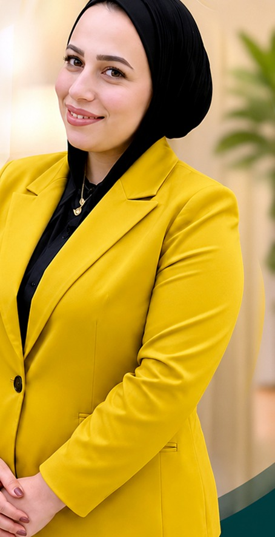

🌱 First Step – الخطوة الأولى
د. شيماء توفيق
⭐ خبيرة في التربية الخاصة والتقييم والتأهيل
خبرة تمتد لأكثر من 16 عامًا في مجال التأهيل والتربية الخاصة
🎓 أبرز المؤهلات والاعتمادات
- Professional Doctorate of Special Education – Stanford College UK
- Professional Doctorate of Special Education – The British Board
- Teacher Affiliate – American Psychological Association (APA)
- حاصلة على Anne Sullivan Award 2019
- عضو اللجنة الطبية بمكتبة الإسكندرية
لأن البداية الصحيحة بتوفر عليكِ وقت ومجهود، وتجنبك تجربة برامج مش مناسبة لحالة طفلك.
خلال المقابلة يتم التعرف على طبيعة الصعوبات التي تواجه الحالة، وتحديد المسار المناسب للاختبارات والتقييمات وبرامج التدخل والتأهيل.
احجزي أول خطوة مع د. شيماء توفيق
تواصل معانا على الواتساب01008235911